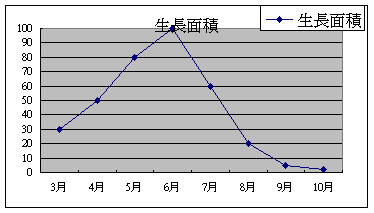
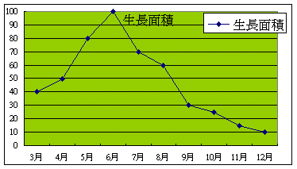
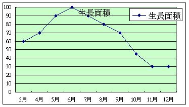

４．研究挖子尾地區海濱植物的的四季變化
挖子尾海濱植物分布較廣、族群數量多、較據有海濱特性的植物 12 種做長期的 追蹤觀察其成長的面積的變化、族群的範圍變化、族群的的分布、生長的高度、開花、結種子的 的 時期等項目。觀察記錄由三月份記錄到隔年的一月份，為更瞭解海濱植物 的變化我們把海濱植物四季變化記錄表，精簡圖表月份生長面積曲線圖
水丁香的生長面積變化

鹽定生長面積變化

濱刺麥生長面積變化

４月
５月
春季中是所有植物生長最快的期間，各種植物生長面積最大，種類最多。三四月份
是水丁香的開花期，沙地上到處都是黃色的小花。四五月份時馬鞍藤和濱刺麥成長
最快，有海濱花后之稱的馬鞍藤也在沙地上開花單花蟛蜞菊大量的開花也大量的結
蓮蓬狀的小種子。紅樹林的胚軸成熟掉落地上。濱刺麥的六月雄花大量開花。三四
月份是海米開花結穗狀種子。
7月
8月
夏季中是海濱質物成長和成熟的時期，在６、７月份是紅樹林的開花期，８月份濱刺
麥的雌花成熟整片沙地上到處可見到濱刺麥刺球的狀的雌花。黃槿也在夏季開花。鹽
定漸漸的枯萎。
９ 月
１０月
１１月
秋季中首先是蘆葦開花了，芒草也跟著開花，在海濱的植物部份枯死一年生草本)各
種植物也有少量的開花。
1月
2月
冬季是植物面對自然環境、氣候條件最惡烈風力強勁、部份植物枯死(一年生草本)必
需要等到春季的來臨才會再發芽成長。
回首頁